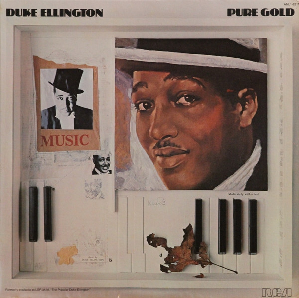

Vinyl Review

Pure Gold
Duke Ellington
As a devoted music lover with a deep appreciation for jazz, I eagerly set out to revisit Duke Ellington's
"Pure Gold" on vinyl. This outstanding compilation features some of the most iconic and enduring works by
Duke Ellington, a true pioneer and legend in the world of jazz music. With masterful performances by the
Duke Ellington Orchestra, "Pure Gold" offers a carefully curated selection of compositions that demonstrate
Ellington's incredible talent as a bandleader, pianist, and composer.
"Pure Gold" opens with the instantly recognizable "Take the 'A' Train," a composition by Billy Strayhorn
that became Ellington's signature tune. The song's catchy melody and upbeat tempo set the tone for the rest
of the album, showcasing Ellington's ability to create compelling and engaging music that has stood the test
of time.
One standout track on the album is "Mood Indigo," a classic ballad that highlights Ellington's genius for
creating lush and evocative soundscapes. The song's smooth, sultry melody and rich harmonies create a
dreamy, introspective atmosphere that draws listeners in and transports them to another time and place.
Another memorable moment on "Pure Gold" is the lively and energetic "It Don't Mean a Thing (If It Ain't Got
That Swing)." This iconic song, featuring the powerful vocals of Ivie Anderson, exemplifies the essence of
the swing era and demonstrates Ellington's mastery of rhythm and melody.
The serene and elegant "Sophisticated Lady" showcases Ellington's skill as a composer, creating a timeless
and captivating ballad that perfectly balances the album's more upbeat and lively tracks. The delicate
interplay between the saxophone, piano, and trumpet creates a complex and nuanced musical tapestry that is
both enchanting and soothing.
The vinyl edition of "Pure Gold" offers a warm, authentic listening experience that brings out the best in
Duke Ellington's timeless jazz masterpieces. The depth and richness of the analog format perfectly
complement the album's dynamic range and emotional intensity, making it a must-have for fans and collectors
of jazz music.
Final Verdict: "Pure Gold" is a timeless journey through Duke Ellington's jazz masterpieces, featuring
iconic compositions and outstanding performances by the Duke Ellington Orchestra. The vinyl edition provides
an authentic and immersive listening experience that captures the essence of Ellington's legendary talent,
making it a must-listen for fans of jazz music and admirers of the great composer.
Did you enjoy my review of this album? Check out one of my favorite album reviews below or see a
list of my reviews!
More importantly, I'm always looking for new music to enjoy. Let
me know what you're currently listening to!
My Favorites
Read why these albums are my all-time favorites!